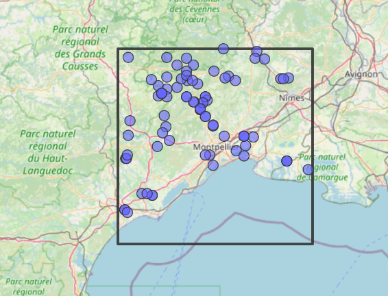
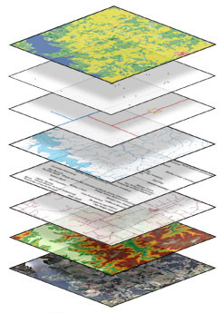
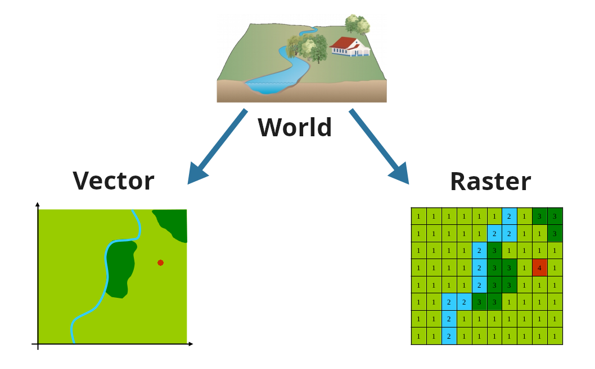

Objectives
- Feel more comfortable to work with spatial data
- Load spatial data in R and visualize it
- Extract information from remote sensing or model datasets
- Take advantage of the numerous databases that are available online

Schedule
| Time | Activities |
|---|---|
| 9.00 – 9.30 am |
Introduction |
| 9.30 – 12.00 am |
Tutorials on handling vectors data type: points, lines, and polygons |
| 12.00 – 1.30 pm | Lunch break |
| 1.30 – 4.00 pm |
Tutorials on handling raster data type, high dimensioinal rasters, and make a grid |


It’s a practical workshop, you will work in front of the screen, so don’t forget to take breaks !
What is Geographic Information System (GIS)?
Geographic Information System
A geographic information system (GIS) consists of integrated computer hardware and software that store, manage, analyze, edit, output, and visualize geographic data. (Wikipedia)

- softwares to handle spatial data
- data stored with their coordinates
- defined by their projection systems
Two key concepts in GIS:
- Coordinate Reference Systems (CRS)
- data type: raster vs vector
Coordinate Reference Systems
All maps are wrong
There are many, many projections
The most commun projection systems
One system to code them all: EPSG1
The projection system will depend on the objective and the spatial extent.
Local
- France:
Lambert 93, conformal conic projection EPSG:2154 - Europe:
Lambert azimuthal equal-area EPSG:3035 - Other: Universal Transverse Mercator (UTM), e.g. 32N for Western Europe EPSG:25832
World
- geographic lat/long WGS84 EPSG:4326 used in GPS
- Pseudo-Mercator EPSG:3857 used by GoogleMap, OpenStreetMap, leaflet, …
- many others (Winkel Tripel EPSG:53042, Robinson EPSG:54030, Mollweide EPSG:54009)
When and why must you care about projection systems?
Crossing multiple spatial data from different sources
- Keep track of the projection system of your observation data
- Make sure all datasets share the same projection system or project them
Calculating distances, or areas1
- Use appropriate projection system (e.g. equal-area for areas or equidistant for distances)
- The projection system will define the unit
Two world views: Raster vs Vector
Vector vs Raster data type
Vector
- Points, Lines or Polygons
- Conserve shape and spatial accuracy
- Good for GPS observations, patches, boundaries, …
- Rivers
- Protected areas

Rivers ?
Vegetation index (e.g. NDVI)?
Elevation ?
Protected areas ?
Land use-land cover ?
Raster
- Matrix, regular grid with equidistant cells
- Spatial resolution = cell size
- Format for satellite data, model output, …
- Vegetation index (e.g. NDVI)
- Elevation
Vector vs Raster file format
Vector
- Geopackage(.gpkg)
open format based on SQLite - ESRI shapefile (.shp)
historical format from ESRI.
Multiple files (dbf, shx, shp, prj) - GPS Exchange Format (.gpx)
XML file designed for GPS data - geojson (.geojson)
plain text file, used in web API but limited to WGS84 - Google Earth (.kml)
Raster
- GeoTIFF (.tif)
the standard format. Can store multiple “bands”. - NetCDF (.nc)
for storing multi-dimensional, array-oriented variables - ASCII Grid (.asc)
simple text files - GRIdded Binary (.grb), WMO standard
- Imagine (.img) ERDAS file format
Where can we find spatial data?
Data sources
France
Europe
- Copernicus: land, climate, marine
- EU JRC
- EU Env. Agency
- EcoDataCube
Topics
Elevation and bathymetry
Biomes and Ecoregions
Population density
Keeping track of new spatial data
R as a GIS tool
Is R a good GIS software?
| Desktop GIS (GUI) ArcGIS, Quantum GIS |
Scripting , Python1 |
|
|---|---|---|
| Home disciplines | Geography | Computing, Statistics |
| Software focus | Graphical User Interface | Command line |
| Reproducibility | Minimal | Maximal |
packages
In this tutorial we will see how to use terra, sf, and mapview.
Other interesting packages:
mapsfandtmap: creates nice looking maps
exactextractr: fast extraction on large raster
Recently deprecated packages (end of 2023) : sp, raster, rgdal, rgeos, maptools
Summary of key functions in terra
Vector
# read
vector <- vect("my_polygons.gpkg")
# write
writeVector(vector, "my_file.gpkg")
# calculate distance or perimeter
perim(vector)
# calculate area for polygons
expanse(vector)
# calculate distance between objects
distance(vector)
# create buffers around objects
buffer(vector, set_dist)
# find spatially interesecting features
intersect(vector1, vector2)
# transform vector to raster format
rasterize(vector)<>
# coordinate reference system
crs()
# extent of the spatial object (xmin, xmax, ymin, ymax)
ext()
# getting the dimensions of the spatial object
dim()
# making a simple map
plot()
# projection to different CRS
project()
# extracting raster values at vector locations
extract(vector, raster)
# remove area outside extent of interest
crop()
mask()